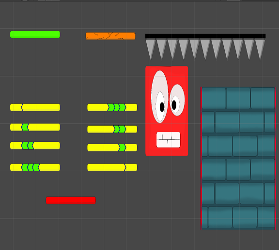

Furry Escape
Furry Escape is a 2D platformer game designed to create a challenging yet enjoyable hyper-casual gaming experience. The game is available on both the Android platform and Itch.io. This project marks my first foray into WebGL game development, providing valuable insights into Unity 2D and the deployment process. The game features various platforms with unique behaviors and utilizes Player Prefs to save high scores, enhancing player engagement.
Objectives of the Project:
Game Development and Implementation:
UNIQUE PLATFORM INTERACTIONS:

GAME ASSET AND ENVIRONMENT DESIGN:
